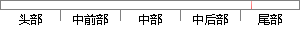

在总结和对比了现有的恶意域名检测技术的基础上，提出了本文的研究目标和研究内容；
片段位置图

相似结果|
1
原句片段：在总结和对比了现有的恶意域名检测技术的基础上，提出了本文的研究目标和研究内容；
相似片段 1：内容提示: 研究与开发 Research & Development23引言...对本文进行总结的基础上,对未来DNS恶意行为检测前景...维度介绍现有的基于域名的恶意行为安全检测技术;之后...
相似片段 2：Research & Development 研究与开发 基于域名的恶意行为...绍现有的基于域名的恶意行为安全检测技术;之后从DNS...检测系统 ,最后在对本文进行总结的基础上,对未来 ...
|
※ 片段修改建议 ※
近似词参考：- 对比：对照 比较 比拟
- 恶意：歹意
- 技术：手艺 技能
- 研究：钻研
- 目标：方针 目的
- 研究：钻研
系统自动生成语句：在总结和对照了现有的歹意域名检测手艺的基础上，提出了本文的钻研方针和钻研内容；
注：本片段修改建议为系统自动生成，仅供参考。